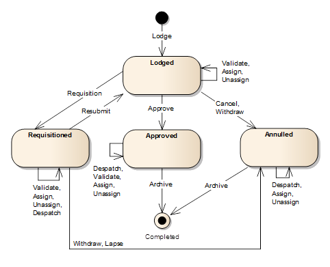

Cycle de vie d'une Demande
Les demandes peuvent exister sous differents statuts au fur et à mesure de leur traitement dans SOLA.
Les actions sont faites pour passer une demande d'un statut à un autre, bien que toutes les
actions ne provoquent pas le changement de statut. Les actions qui peuvent être appliquées sont:
- Dépôt – Cette action est déclanchée lors de la première sauvegarde d'une nouvelle demande.
L'action Dépôt engendre le statut Déposé à la demande.
- Valider – Valide les détails d'une demande et présente les résultats de l'onglet
Validations de l'écran de Détails de Demande. Pour valider une demande, utiliser l'outil
Valider de la barre de menu de l'écran de Détail de la Demande.
- Assigner – Assigne les demandes aux utilisateurs nommés. Déclenché depuis l'écran
d'Assignation des Demandes.
- Retirer – Retire une demande assignée à l'utilisateur courant. Déclenché depuis l'écran
d'Assignation des Demandes.
- Réquisition – Une demande peut être réquisitionnée quand plus d'informations sont
requises du demandeur ou de l'intermédiaire en utilisant l'outil de Réquisition dans la barre d'outil
du Détail de la Demande. L'action Réquisition action passe la demande au statut Réquisitioné,
la plaçant En Attente jusqu'à ce que les informations supplémentaires soient reçues. L'outil
Réquisition n'est disponible que quand la demande est au statut déposé et assignée à
un utilisateur.
- Resoumettre – Une fois que le demandeur ou l'intermédiaire fourni les informations nécessaires, la
demande peut être resoumise au traitement en utilisant l'outil Resoumission dans la barre de menu
du Détail de la Demande. Cet outil est seulement disponible quand la demande est au statut
Réquisitioné et est assigné à un utilisateur.
- Rennoncer – Les demandeurs et/ou intermédiaires peuvent demander de renoncer à la demande
avant son approbation. Pour renoncer une demande, utiliser l'outil de Renonciation dans la barre de menu
de Détails de la Demande. L'action de Renonciation passe la demande au statut Annulé. L'outil de Renonciation
est disponible quand la demande est au statut Déposé ou Réquisitioné et qu'elle est assignée à
un utilisateur.
- Expirer – Les demandes au statut réquisitionné dans une certaine période de temps sans
réponse de la part du demandeur ou de l'intermédiaire peut expirer. Pour expirer une demande, utiliser l'outil
d'expiration dans la barre de menu du Détail de la Demande. L'action expirer passe la demande au statut
Annulé. L'outil d'expiration n'est disponible que quand une demande est au statut Réquisitionné et est
assigné à un utilisateur.
- Annuler – Les demande qui ont été estimées avoir été créées par erreur, devenues invalides ou
rejetées, peuvent être annulée au jugement de l'agende de l'administration des terres en
utilisant l'outil Annulation dans la barre de menu du Détail de la Demande.
TL'action Annuler passe la demande au statu Annulé. L'outil Annulation n'est disponible que
quand la demande est au statut Déposé.
- Approuver – Suivant le jugement de la demande et l'achèvement de tous les services
(achèvement ou annulation), la demande peut être approuvée en utilisant l'outil Approuver
dans la barre de menu du Détail de la Demande. L'action approuver exécutes les règles métier approuvées
pour la demande et la passe au statut Approuvé si les contrôles de règles métier sont passées
avec succès. L'outil Approuver n'est disponible que quand la demande est au statut Déposé, est
assignée à un utilisateur et que tous les services de la demande sont soit au statut Exécuté, soit
au statut Annulé.
- Envoyer – Les notifications (ex: emails, lettres ou appels téléphoniques) au
demandeur ou intermédiaire peuvent être annotées à la demande en utilisant l'outil Envoyer dans
la barre de menu du Détail de la Demande. Dans la mesure du possible, la notification est attachée
à la demande sous forme de document pour pouvoir y faire référence dans le future. L'outil d'envois n'est
disponible que quand la demande est au statut Approuvé, Réquisitionné ou Annulé.
- Archiver – Lorsque tout le traitement est achevé et les notifications appropriées
envoyées, la demande peut être exécutée en utilisant l'outil Achiver dans la barre de menu
du Détails de la Demande. L'action Archiver passe la demande au statut Exécuté.
L'outil d'Archivage n'est disponible que quand la demande est au statut Approuvé ou
Annullé.
Le diagramme suivant du changement de statut illustre le cycle de vie d'une demande et les effets
des actions différents sur le statut des demandes.

Voir aussi